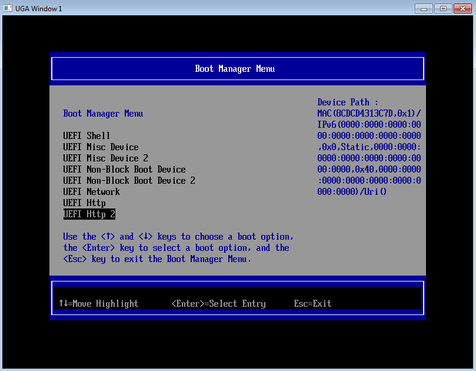
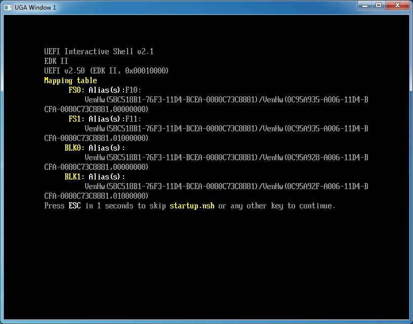

Run HTTP boot
Now, you are ready to run HTTP boot over NT32 simulator. Start NT32 simulator and enter Boot Manager, then select “UEFI Http” to boot over IPv4 stack (refer to Figure 5) or “UEFI Http 2” to boot over IPv6 stack (refer to Figure 6).

Figure 5 Select “UEFI Http” to boot over IPv4 stack

Figure 6 Select “UEFI Http 2” to boot over IPv6 stack
Now the HTTP boot process is triggered over NT32 simulator. The HTTP driver stack will communicate with HTTP server, DNS server, and DHCP server to download an UEFI shell then boot to the downloaded shell. Figure 7 shows the result of this successful HTTP boot. 